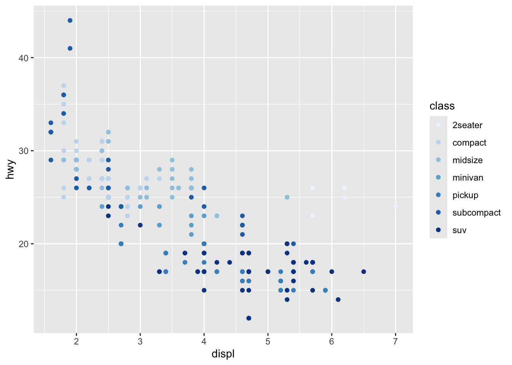
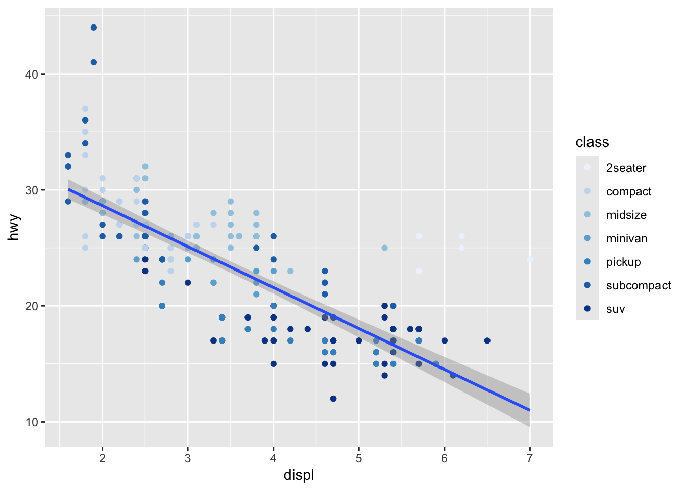
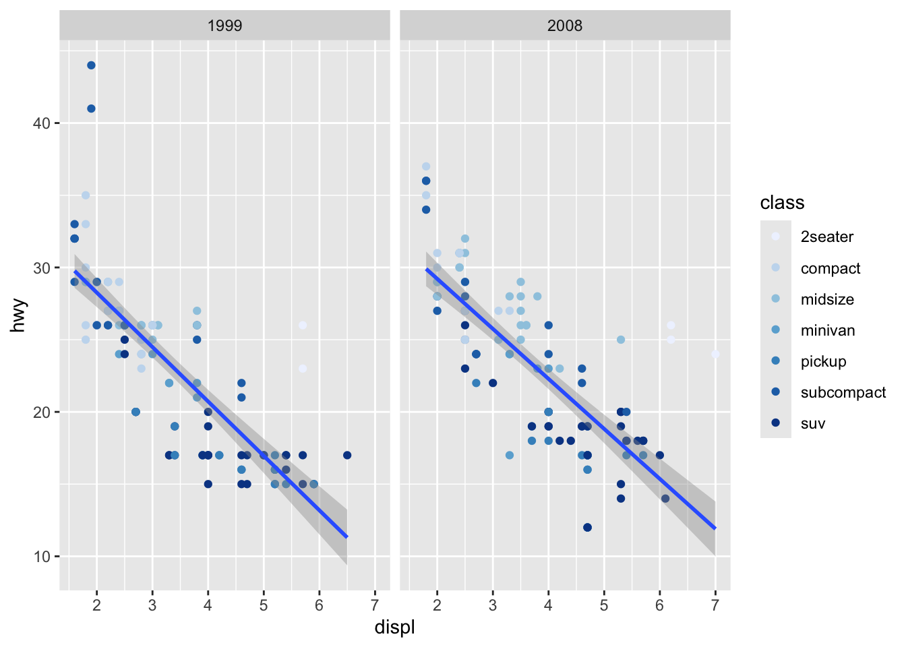

# A tibble: 234 × 11
manufacturer model displ year cyl trans drv cty hwy fl class
<chr> <chr> <dbl> <int> <int> <chr> <chr> <int> <int> <chr> <chr>
1 audi a4 1.8 1999 4 auto… f 18 29 p comp…
2 audi a4 1.8 1999 4 manu… f 21 29 p comp…
3 audi a4 2 2008 4 manu… f 20 31 p comp…
4 audi a4 2 2008 4 auto… f 21 30 p comp…
5 audi a4 2.8 1999 6 auto… f 16 26 p comp…
6 audi a4 2.8 1999 6 manu… f 18 26 p comp…
7 audi a4 3.1 2008 6 auto… f 18 27 p comp…
8 audi a4 quattro 1.8 1999 4 manu… 4 18 26 p comp…
9 audi a4 quattro 1.8 1999 4 auto… 4 16 25 p comp…
10 audi a4 quattro 2 2008 4 manu… 4 20 28 p comp…
# ℹ 224 more rowsAppendix B — ggplot2 minimals
Note: This section does not provide a complete treatment of the basics of the ggplot2 package. Rather, it provides the minimal knowledge of the package so that readers who are not familiar with the package can still understand the codes for map making presented in Chapter 7.
The ggplot2 package is a general and extensive data visualization tool. It is very popular among R users due to its elegance in and ease of use in generating high-quality figures. The ggplot2 package is designed following the “grammar of graphics,” which makes it possible to visualize data in an easy and consistent manner irrespective of the type of figures generated, whether it is a simple scatter plot or a complicated map. This means that learning the basics of how ggplot2 works directly helps in creating maps as well. This chapter goes over the basics of how ggplot2 works in general.
In ggplot2, you first specify what data to use and then specify how to use the data for visualization depending on what types of figures you intend to make using geom_*(). As a simple example, let’s use mpg data to create a simple scatter plot. Here is what mpg dataset looks like:
The code below creates a scatter plot of displ and hwy variables in the mpg dataset.
ggplot(data = mpg) +
geom_point(aes(x = displ, y = hwy))
ggplot(data = mpg) +
geom_point(aes(x = displ, y = hwy, color = class))
However, this one does not work because color = class is outside of aes() and R does not look for class object inside mpg.
ggplot(data = mpg) +
geom_point(aes(x = displ, y = hwy), color = class)Error in `geom_point()`:
! Problem while setting up geom aesthetics.
ℹ Error occurred in the 1st layer.
Caused by error in `rep()`:
! attempt to replicate an object of type 'builtin'You can still specify the color that is applied universally to all the observations in the dataset like this:
ggplot(data = mpg) +
geom_point(aes(x = displ, y = hwy), color = "blue")
These examples should clarify what aes() does: it makes the aesthetics of the figure data-dependent.
In the code to create Figure B.1, the default color option was used for color-differentiation by class. You can specify the color scheme using scale_*(). The scale_*() function generally takes the form o fscale_x_y(), where x is the type of aesthetics you want to control, and y is the method for specifying the color scheme. For example, in the code above, the type of aesthetics is color. And suppose we would like to use the brewer method. Then the scale function we should be using is scale_color_brewer(). The code below uses scale_color_brewer() and the palette option to specify the color scheme by ourselves.
ggplot(data = mpg) +
geom_point(aes(x = displ, y = hwy, color = class)) +
scale_color_brewer(palette = 1)

As you can see the color scheme is now changed. There are many other different types of pallets available.
To create a different type of figure than scatter plot, you can pick a different geom_*(). For example, geom_histogram() creates a histogram.
ggplot(data = mpg) +
geom_histogram(aes(x = hwy), color = "blue", fill = "white")
You can save a created figure (or more precisely the data underpins the figure) as an R object as follows:
#--- save the figure to g_plot ---#
g_plot <- ggplot(data = mpg) +
geom_point(aes(x = displ, y = hwy, color = class)) +
scale_color_brewer(palette = 1)
#--- see the class ---#
class(g_plot)[1] "gg" "ggplot"You can call the saved object to see the figure.
g_plot
Another important feature of ggplot2 is that you can add layers to an existing ggplot object by + geom_*(). For example, the following code adds the linear regression line to the plot:
g_plot +
geom_smooth(aes(x = displ, y = hwy), method = "lm")
This feature makes it very easy to plot different spatial objects in a single map as we will find out later.
“Faceting” is another useful feature of the package. Faceting splits the data into groups and generates a figure for each group where the aesthetics of the figures are consistent across the groups. Faceting can be done using facet_wrap() or facet_grid(). Here is an example using facet_wrap():
ggplot(data = mpg) +
geom_point(aes(x = displ, y = hwy, color = class)) +
geom_smooth(aes(x = displ, y = hwy), method = "lm") +
scale_color_brewer(palette = 1) +
facet_wrap(year ~ .) 
year ~ . inside facet_wrap() tells R to split the data by year. The . in year ~ . means “no variable”.1 So, the above code splits the mpg data by year, applies the geom_point() and geom_smooth(), applies scale_color_brewer() to each of them, and then creates a figure for each group. The created figures are then presented side-by-side.2 This feature can be handy, for example, when you would like to display changes in land use over time where faceting is done by year.
1 You can do two-way splits by supplying another categorical variable instead of . in year ~ ..
2 You can change the orientation by using facet_wrap(. ~ year).
While there are other important ggplot2 features to be aware of to make informative maps, I will not discuss them here. Rather, I will introduce them when they first appear in the lecture through examples. For those who are interested in learning the basics of ggplot2, there are numerous books written about it on the market. Some prominent ones are